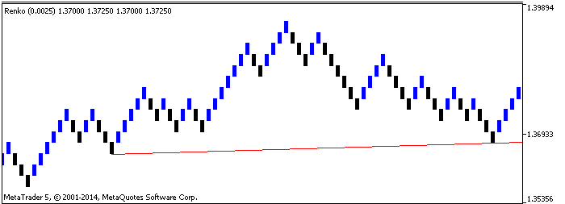
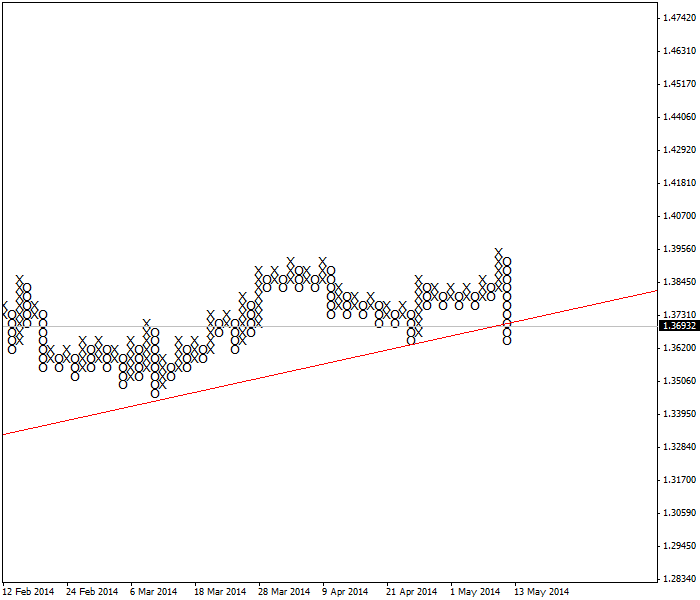

<!DOCTYPE html>
<html>
</html>
<head>
  <meta charset="utf-8">
  <meta http-equiv="X-UA-Compatible" content="IE=edge">
  <title>外汇站（fx-z.com） - 外来图表类型</title>
  <meta name="description" content="">
  <meta name="viewport" content="width=device-width, initial-scale=1">
  <meta name="robots" content="all,follow">
  <!-- Bootstrap CSS-->
  <link rel="stylesheet" href="vendor/bootstrap/css/bootstrap.min.css">
  <!-- Font Awesome CSS-->
  <link rel="stylesheet" href="vendor/font-awesome/css/font-awesome.min.css">
  <!-- Google fonts - Roboto-->
  <link rel="stylesheet" href="https://fonts.googleapis.com/css?family=Roboto:400,300,700,400italic">
  <!-- owl carousel-->
  <link rel="stylesheet" href="vendor/owl.carousel/assets/owl.carousel.css">
  <link rel="stylesheet" href="vendor/owl.carousel/assets/owl.theme.default.css">
  <!-- theme stylesheet-->
  <link rel="stylesheet" href="css/style.default.css" id="theme-stylesheet">
  <!-- Custom stylesheet - for your changes-->
  <link rel="stylesheet" href="css/custom.css">
  <!-- Favicon-->
  <link rel="shortcut icon" href="img/favicon.png">
  <!-- Tweaks for older IEs--><!--[if lt IE 9]>
    <script src="https://oss.maxcdn.com/html5shiv/3.7.3/html5shiv.min.js"></script>
    <script src="https://oss.maxcdn.com/respond/1.4.2/respond.min.js"></script><![endif]-->
</head>
<body>
  <div id="all">
    <div class="container-fluid">
      <div class="row row-offcanvas row-offcanvas-left"> 
        <!--   *** SIDEBAR ***-->
        <div id="sidebar" class="col-md-4 col-lg-3 sidebar-offcanvas">
          <div class="sidebar-content">
            <h1 class="sidebar-heading"> <a href="https://fx-z.com">fx-z.com</a></h1>
            <p class="sidebar-p">介绍外汇相关的基本知识，告诉您如何进行自己的技术面和基本面分析，讲解先进的交易理念，并且为您阐述失败交易者与专业交易者之间的真正区别。 </p>
            <p class="sidebar-p">通过这些课程的学习，您将学会如何根据自己的优势来应用情绪分析，还将了解真实世界的事件会对货币汇率产生什么影响，央行在外汇市场中所发挥的作用，以及交易者在颇受欢迎的即期外汇交易中有哪些选择方案。 </p>
            <ul class="sidebar-menu">
                <!-- Link-->
                <li class="sidebar-item"><a href="https://fx-z.com" class="sidebar-link">首页</a></li>
                <!-- Link-->
                <li class="sidebar-item"><a href="cihui.html" class="sidebar-link">外汇词汇</a></li>
                <!-- Link-->
                <li class="sidebar-item"><a href="ebook.html" class="sidebar-link">获取外汇电子书</a></li>
            </ul>
            <p class="social"><a href="https://www.cn-forextime.com/zh?partner_id=4920383" target="_blank"data-animate-hover="pulse" class="external facebook"><i class="fa fa-eur"></i></a><a href="https://www.cn-forextime.com/zh?partner_id=4920383" target="_blank" data-animate-hover="pulse" class="external gplus"><i class="fa fa-gbp"></i></a><a href="https://www.cn-forextime.com/zh?partner_id=4920383" target="_blank" data-animate-hover="pulse" class="external twitter"><i class="fa fa-rmb"></i></a><a href="https://www.cn-forextime.com/zh?partner_id=4920383" target="_blank" title="" class="external instagram"><i class="fa fa-dollar"></i></a><a href="https://www.cn-forextime.com/zh?partner_id=4920383" target="_blank" data-animate-hover="pulse" class="email"><i class="fa fa-money"></i></a></p>
            <div class="copyright text-center text-md-left">
             
              
            </div>
          </div>
        </div>
        <!--   *** SIDEBAR END ***  -->
        <!--   *** DETAIL ***-->
        <div class="col-md-8 col-lg-9 content-column white-background">
          <div class="small-navbar d-flex d-md-none">
            <button type="button" data-toggle="offcanvas" class="btn btn-outline-primary"> <i class="fa fa-align-left mr-2"></i>菜单</button>
            <h1 class="small-navbar-heading"> <a href="https://fx-z.com/4-5.html">下一篇 </a></h1>
          </div>
          <div class="row">
            <div class="col-xl-10">
              <div class="content-column-content">
                <h1>外来图表类型</h1>
       <p>
    指标涉及一个永恒的问题——即它们努力过滤噪音并提供单纯的趋势。指标容易出现虚假的突破和锯齿波动——正如我们的眼睛会遇到额外的臆想问题。而外来图表类型旨在克服这些缺点。
</p>
<p>
    <strong>点数图（P＆F）</strong>
</p>
<p>
    点数图仅显示重要价格，“重要”意味着价格超过前一个高点或低于前一个低点特定量。点数图过滤噪音。使用点数图时，您不关心时间，而且事实上，与所有其他图表一样，您甚至没有在横轴上看到时间。点数图唯一重要的事情是价格变动。整个阶段可以经过——数天——但图表上未显示任何入场，因为没有出现高于或低于上一个高点或低点的价格变动。当您以 X 点的涨幅创下新高点时（您事先已指定），您在图表上标注 X。当创下新低时，您标注 O。因此，点数图交替显示 X 列和 O 列，每列代表价格上升或下跌。请记住，一列可以有 10 个 X，但这不代表经过了 10 个时段——可能是 3 个或 30 个时段。
</p>
<p>
    生成 X 或 O 的最小变动被称为格值。软件将为您提供默认设置，但实际上，这些设置通常只适合屏幕，与实际的价格变动并无关联。大多数外汇图表分析师将为格值选择平均真实波动范围。用于定义反转的最小变动被称为反转量，通常占两至四格。显然，如果您遇见一系列只包含一个 X 或 O 的反转列，那么您的格值或反转量太小。
</p>
<p>
    点数图需手动绘制支撑线和阻力线，这些线包括水平连接前一个“历史”高点或低点的线条类型，也包括连接低点或高点的标准线条类型。其支撑线和阻力线往往是非常可靠的，因为您已过滤噪音和压缩时间。其他形态也比较可靠，例如双重顶、双重底和三角形形态。
</p>
<p>
    人们认为点数图更适合长期投资，不适合如今大多数外汇交易者采用的快速日内交易，但您可以将该图表用于包括 5 分钟在内的任何时间周期。下图为使用 30 点格值的点数图格式。该货币对已打破手绘支撑线，形成清晰的卖出信号。您可以将点数图与其他指标结合使用，例如 MACD 和 随机指标。
</p>
<p>
     点数图以及破碎的支撑线
</p>
<p>
    <strong>砖形图（Renko）</strong>
</p>
<p>
    砖形图与点数图非常相似——它们过滤掉噪音，只在达到最小价格变动时用一个被称为“砖形”的方形体来表示变动，而且不考虑时间因素。砖形图得名于日语中的“renga” 一词，即“砖头”的意思。这种图表由蜡烛图专家 Steve Nison 引入西方。
</p>
<p>
    与点数图相似，您可以在砖形图中指定形成新砖形时必须达到或超过的特定点数。从业人员通常在短期图表上设置较小的砖形值，例如 5 或 10 点，然后指定用三块砖形来确定一个新变动。
</p>
<p>
    只有当目前收盘价比前一个现有砖形的顶部高一定量（或比底部低一定量）时，才会在图表上绘制一个新砖形。当价格变动有资格形成一个砖形以及第二个砖形的一部分时，只应绘制一个砖形。在大多数（如果不是全部）软件中，由砖形图创建的指标同样剔除了不合格或剩余的点值，这让指标变得非常清晰（例如 MACD），对决策大有帮助。
</p>
<p>
    下列砖形图显示与上一个点数图相同的货币对和周期，而且使用 30 点砖形值。由于砖形图与时间因素无关，其横轴也不显示日期。我们永远不知道，需要多久才能形成一块最小的砖形。与点数图相比，砖形图的有趣之处在于，它不显示低于支撑线的突破。
</p>
<p>
     砖形图以及完好无损的支撑线
</p>
<p>
    <strong>平均足（Heikin-Ashi）</strong>
</p>
<p>
    平均足蜡烛图通过平均过程来形成复合蜡烛图（heiken 的日语含义为“平均”；ashi 的含义为“腿”，但可以翻译为“步伐”）。在以下计算中，O = 开盘价，H = 高价，L= 低价 和 C = 收盘价。
</p>
<p>
    平均足蜡烛图的收盘价为（O + H + L + C）/ 4。
</p>
<p>
    当前时段蜡烛图的开盘价为（前烛 O + 前烛 C）/ 2。
</p>
<p>
    高价取 3 个可能选项中的最高值——当前时段高价、当前平均足蜡烛图开盘价或收盘价。
</p>
<p>
    最低价取 3 个可能选项中的最低值——当前低价、当前平均足蜡烛图开盘价或收盘价。
</p>
<p>
    当平均足蜡烛图收盘价高于开盘价时，蜡烛图为白色或空心。当平均足蜡烛图收盘价低于开盘价时，蜡烛图为黑色或实心。与传统蜡烛图相比，平均足蜡烛图往往出现更多的单色烛形——再次通过平均过程消除噪音。有些交易者认为，标识清晰的趋势使平均足成为了一种独立的交易系统。一般而言，大部分标准蜡烛图形态均不适用于平均足蜡烛图，但十字星和纺锤线仍然有效，而且您仍然可以绘制支撑线、阻力线、通道和其他技术。请注意，与点数图和砖形图不同，平均足图表将在横轴上显示时间。
</p>
<p>
     相同外汇图表的平均足版本
</p>
<p>
    <br/>
</p>
<p>
    <br/>
</p>
              </div>
            </div>
          </div>
        </div>
      </div>
    </div>
  </div>
  <!-- JavaScript files-->
  <script src="vendor/jquery/jquery.min.js"></script>
  <script src="vendor/popper.js/umd/popper.min.js"> </script>
  <script src="vendor/bootstrap/js/bootstrap.min.js"></script>
  <script src="vendor/jquery.cookie/jquery.cookie.js"> </script>
  <script src="vendor/owl.carousel/owl.carousel.min.js"></script>
  <script src="vendor/masonry-layout/masonry.pkgd.min.js"></script>
  <script src="js/front.js"></script>
</body>